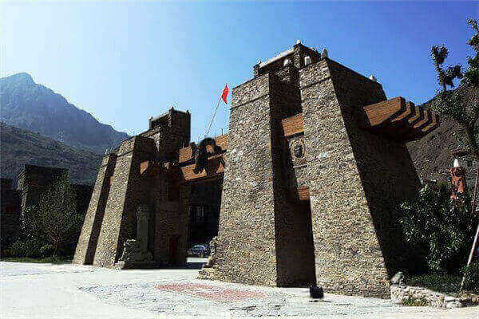
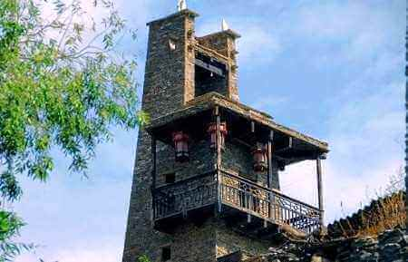
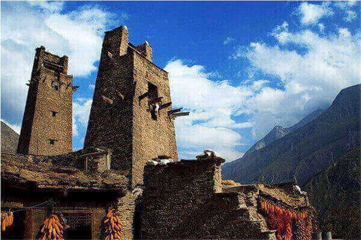
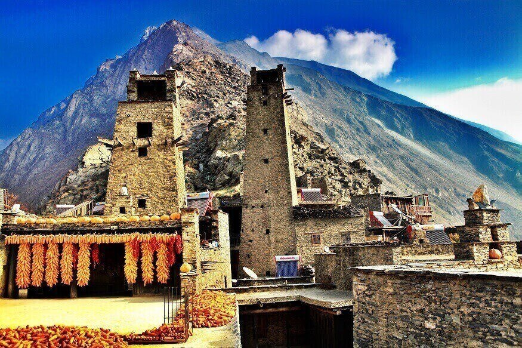

morly旅游圈
游记路线(成都--都江堰--汶川--桃坪羌寨)
进入汶川后没有多久，就看到了矗立在路边的桃坪羌寨，此次我们的川西阿坝行因为种种原因时间也是压缩再压缩，路线也是变化了多次。
所以当看到矗立在路边别具特色的羌寨时赶紧下车，准备迅速浏览寨子的外观，车子停罢马上就有一个美丽的羌族女子上来说可以带我们浏览并讲解，盛情难却之下也就答应，跟着她带领的路线走。
走过一片新建的羌式建筑，就正式进入世界保存最完整的羌族建筑文化艺术“活化石”，“东方神秘古堡”桃坪羌寨。
当羌寨开始出现在我们眼前，远远就被他们的建筑风格所吸引，石头砌成为的房子和高高的碉楼异常壮观、显眼和出众，冬暖夏凉的建筑，民族智慧的结晶。
刚进桃坪羌寨时，东南面巍峨的山、翻滚的云、高高的碉楼风格的塔，此时阳光破隙而出，如此有气势！
羌族，是中国西南一个古老的民族，主要聚居在四川省阿坝藏族羌族自治州东部、绵阳市的北川县、平武县等地。羌族地区至今仍保留原始宗教，盛行万物有灵，多种信仰的灵物崇拜。
自然崇拜主要表现为对白石的崇拜，羌民一般都在石碉房和碉楼顶上供奉着5块白石，象征天神、地神、山神、山神娘娘和树神。
进入了羌寨，头人的官寨，从最高碉楼里的瞭望口向外望去，当年做为观察敌情的窗口现在已然成为一处处景致。站在碉楼里向下望去，古寨群依山而建，和这里的山水完美、和谐地统一起来。上千年的寨子久经住了岁月的轮番考验，“5.12”大地震也没有撼动它强大的根基。 古寨内部车还没有完全停稳，就遇到了一位美丽的羌族姐姐，因为她的热情我们延长了在桃坪羌寨的时间。她告诉我们羌族人崇拜白石，那是因为战争的需要，当敌人入侵到羌寨里时，羌民们用这些石头还击敌人并且战胜了敌人，后来就把它做为一种崇拜。 古寨全景回来查资料得知，羌族人之所以崇拜白石，完全与战争无关，白石乃是羌族人心中最古老的文明的起源。 地震后新建的寨子群落源于上古时期一个古老的与火种有关的神话，因此得到了火，也学会了如何利用火来烹饪食物，而因为能够吃到煮熟了的食物，他们的生命也大大的延长。所以，后世的羌民渐渐的便形成了对白石的崇拜，并把白石作为自己民族的图腾。 坚固的古堡建筑羌族只有语言，但却没有本民族的文字，因此，流传于人民群众中的口头文学在羌族文学中占有重要的特殊地位。它主要是依靠人民群众世代口授和长期歌唱而传承的。 上千年的老寨子，这墙的建筑材料是石片和黄泥土，一片片的石头严丝合缝，有些部位的墙有1米多厚，异常坚固。美丽JJ说他们的寨子冬暖夏凉，稳固牢靠，久经考验。还说这里的街道修建如同迷宫，本地人通行自如，外人进来很容易迷路，需本寨人引路才行。
桃坪历史悠久，据史料记截，寨子始建于公元前111年，西汉时即在此设广柔县，桃坪作为县辖隘口和防御重区便已存在，到现在已集2000多年的历史于一身。
内容整理至网络，如有侵权，请联系我们！1255394075@qq.com
   